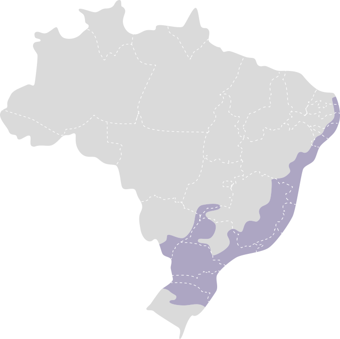

Bioma Mata Atlântica
A Mata Atlântica é um dos biomas mais ricos e diversos do Brasil, conhecido por sua floresta tropical úmida e
variada. Localizada ao longo da costa atlântica do Brasil, estende-se desde o Rio Grande do Norte até o Rio
Grande do Sul, e se caracteriza por sua biodiversidade e complexidade ecológica. Apesar da sua importância
ecológica, a Mata Atlântica tem sido severamente impactada pela atividade humana.

Características Principais:
-
Vegetação
- Floresta Tropical Úmida: A Mata Atlântica é predominantemente uma floresta tropical
úmida,
com árvores de grande porte e densa cobertura de folhas. As árvores são geralmente de grande altura e
possuem uma rica diversidade de espécies.
- Estratificação Vertical: A vegetação é altamente estratificada, com diferentes camadas
que
incluem o dossel superior, o sub-bosque e o chão da floresta. Isso cria uma diversidade de habitats para
muitas espécies.
- Plantas Endêmicas: O bioma abriga uma grande quantidade de plantas endêmicas, como o
pau-brasil e a peroba rosa, que são exclusivas da região.
-
Clima
- Clima Tropical e Subtropical: O clima da Mata Atlântica é tropical ao norte e
subtropical
ao sul, com alta umidade e temperaturas médias anuais que variam entre 18°C e 25°C.
- Precipitação: A precipitação é abundante e distribuída ao longo do ano, com médias
anuais
que variam de 1.200 mm a 2.500 mm, dependendo da região. As chuvas são mais intensas na região costeira.
-
Hidrografia
- Rios e Córregos: A Mata Atlântica é rica em cursos d'água, com inúmeros rios e córregos
que
desempenham um papel crucial no abastecimento de água e na manutenção dos ecossistemas.
- Áreas de Várzea e Pantanais: Existem áreas de várzea e pantanais ao longo dos rios, que
são
importantes para a biodiversidade e para a filtragem natural de água.
-
Biodiversidade
- Fauna: A Mata Atlântica abriga uma vasta gama de espécies animais, incluindo o
mico-leão-dourado, a onça-pintada, o tamanduá-bandeira e diversas espécies de aves e insetos. Muitas
dessas
espécies são endêmicas e encontram na Mata Atlântica seu habitat exclusivo.
- Flora: A flora da Mata Atlântica é extremamente diversificada, com árvores como o ipê,
o
pau-brasil e várias espécies de orquídeas e bromélias que se adaptaram às condições úmidas da região.
-
Importância Ecológica
- Regulação Climática: A Mata Atlântica desempenha um papel crucial na regulação do clima
local e na manutenção dos ciclos hidrológicos. Suas florestas ajudam a regular a temperatura e a
umidade.
- Conservação da Biodiversidade: É um dos principais hotspots de biodiversidade no mundo,
com
muitas espécies ameaçadas e uma rica diversidade genética.
-
Ameaças
- Desmatamento: A Mata Atlântica tem sido severamente afetada pelo desmatamento,
principalmente devido à expansão agrícola, urbanização e exploração madeireira. A perda de habitat
ameaça
muitas espécies.
- Fragmentação do Habitat: A fragmentação da floresta causada pela urbanização e pela
agricultura tem levado à perda de conectividade entre áreas de habitat, impactando negativamente a
biodiversidade.
A Mata Atlântica é um bioma vital para a biodiversidade do Brasil e desempenha papéis cruciais na regulação
ambiental. Sua conservação é essencial para proteger as espécies únicas que nela habitam e para garantir o
equilíbrio ecológico da região.